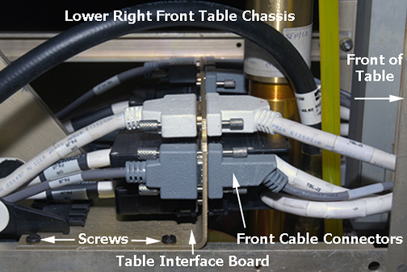

Operating Documentation
Direction 5670006, Rev# 1
Discovery MR750w GEM Service Methods
Module Version 6.0, Version Date 10/21/11
Operating Documentation |
| Required Persons | Preliminary Reqs | Procedure | Finalization |
|---|---|---|---|
| 1 | 40 mins |
Perform the following procedure as directed to maintain smooth, responsive operation of the patient table hydraulics.
| Item | Qty | Effectivity | Part# | Manufacturer | |
|---|---|---|---|---|---|
| Hydraulic Filter Kit | 1 | - | 46-230880P1 | - | |
| Hydraulic Oil | 1 | - | 46-230006P2 | - | |
| Loctite® 569 | 1 bottle (50 ml) | - | 46-230614P1 | - | |
| Absorbent Towels | Sufficient | - | - | - | |
| 3/4 in. Open-End Wrench | 2 | - | - | - | |
| Ear Syringe | 1 | - | - | - | |
| Standard Tool Kit with Phillips Screwdrivers | 1 | - | - | - | |
| Item | Qty | Effectivity | Part# | Manufacturer | |
|---|---|---|---|---|---|
| Filter | 1 | - | 5142785 | - | |
Undock the patient table and remove it from the Magnet Room.
Raise the patient table to the full up position.
| ||||
| PERSONAL INJURY POSSIBILITY! | ||||
| WHEN PERFORMING MAINTENANCE ON THE TABLE IN ITS UP POSITION, SEVERE PERSONAL INJURY CAN OCCUR IF TABLE IS ACCIDENTALLY LOWERED DURING MAINTENANCE PERFORMANCE. | ||||
| ENSURE THAT THE LOCK SAfety BAR IS SAFELY IN PLACE. |
Lower the table Lock Safety Bar.
Lower the table to ensure all of its weight is resting on the lock safety bar.
Remove the lower base covers. Refer to Patient Table Upper and Lower Base Cover Removal.
Remove the front base cover.
Illustration 1: Front Base Cover

At the lower front of the table chassis, cut the tie-wraps securing the hydraulic line to the frame. If the Table Interface Panel (TIP) is present, remove the Table Interface Panel screws (shown below) from both sides. This will allow sufficient backward movement of the board to loosen the screws on the front cable connectors with a small flat-blade screwdriver.
Illustration 2: Lower Right Front Table Chassis

If a TIP is present, disconnect all front and right-side cable connectors from the TIP. Record all cable designations and positions for proper reinstallation.
Place absorbent towels under the hydraulic cylinder.
Raise the patient table until the Lock Safety Bar is out of the way (three to four pumps). This provides enough clearance to place a 13/16 in. wrench onto the high pressure hose fitting.
Illustration 3: Hydraulic Filter Location

Using two wrenches (one to hold the hose fitting), turn the second wrench just enough to loosen the hose fitting, but avoid allowing any oil to leak out. Lower the table using the Down foot pedal until the table is supported by Lock Safety Bar.
Remove the high-pressure hose from the adapter. (A small amount of oil will spill out of the hose during removal; raise the hose as high as possible to limit oil spillage.)
Remove the filter cap from the filter using two 3/4 in. wrenches.
Illustration 4: Removing Filter Element

Clean the dirty oil off the top of the filter.
Remove the gasket and filter element from the filter body.
Clean the outside threads (both ends) of the filter body with a clean cloth.
Clean the interior threads of the filter cap with a clean cloth.
Install the new filter, hole end down, into the filter body.
| ||||
| Possible Equipment Damage! | ||||
| When reassembling the filter cap, avoid damaging the gasket, and ensure that it is properly seated before tightening with a wrench. | ||||
| If the gasket is deformed, oil will leak out of this connection when reassembled. |
Install the filter cap and new gasket onto the filter body, and ensure the gasket seats properly before tightening with a wrench.
Apply Loctite to the high-pressure hose fitting, reconnect the hose to the cylinder block, and tighten by hand. Raise the table with the Up foot pedal to allow clearance for the wrench, and tighten the hose fitting securely.
Raise the table using several pumps on the Up foot pedal, and check for any oil leaks. If a leak occurs, tighten the connections snugly, but do not over tighten; brass fittings will deform if overtightened.
Proceed to Patient Table Hydraulics Bleeding.
No finalization steps.